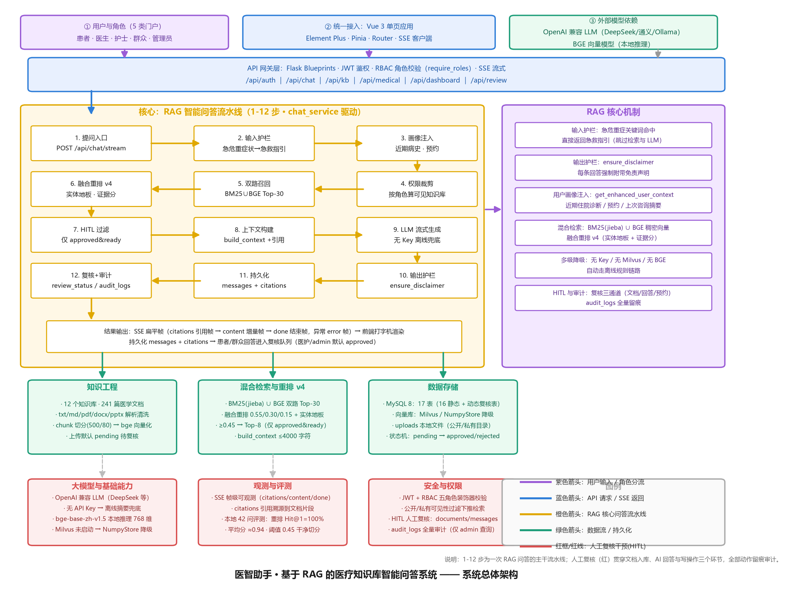
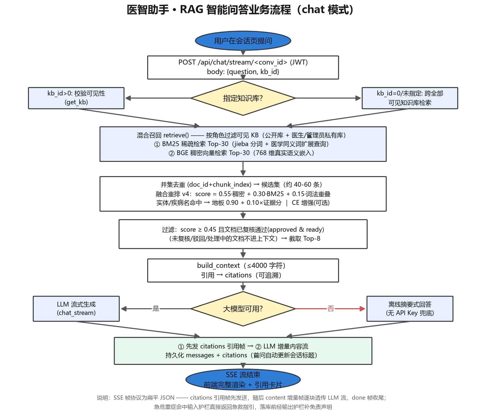
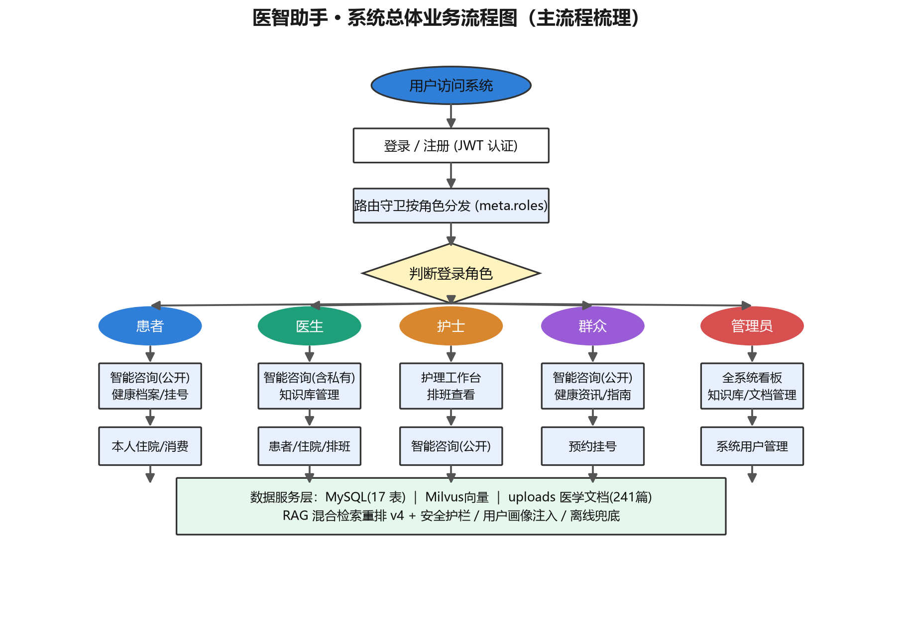
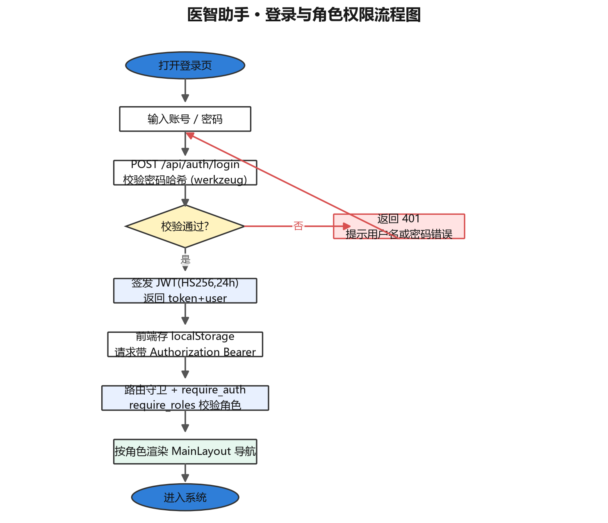
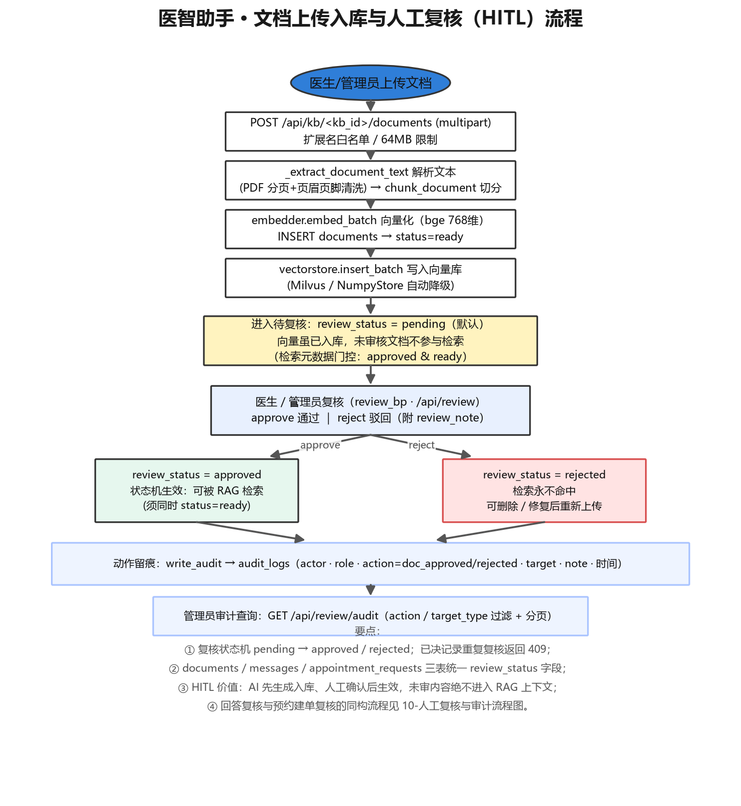
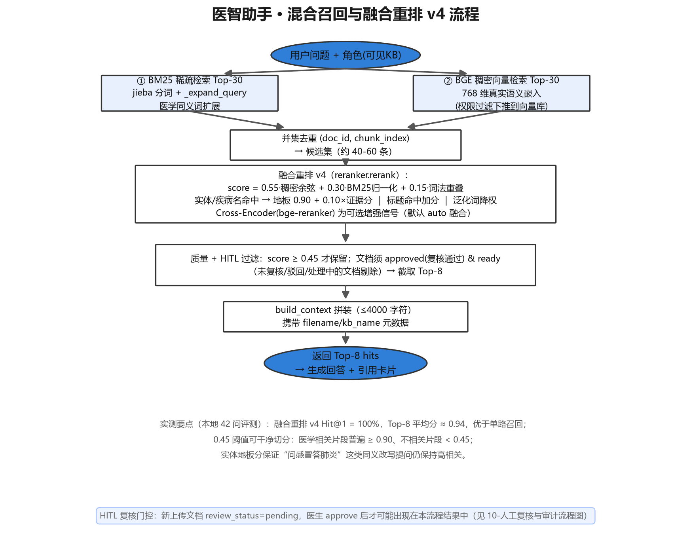
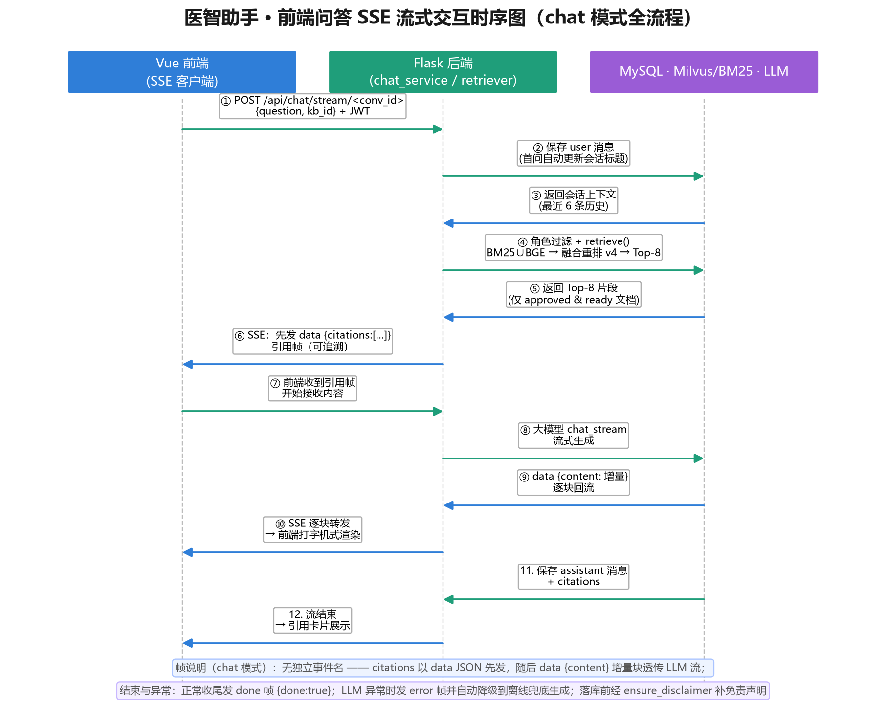
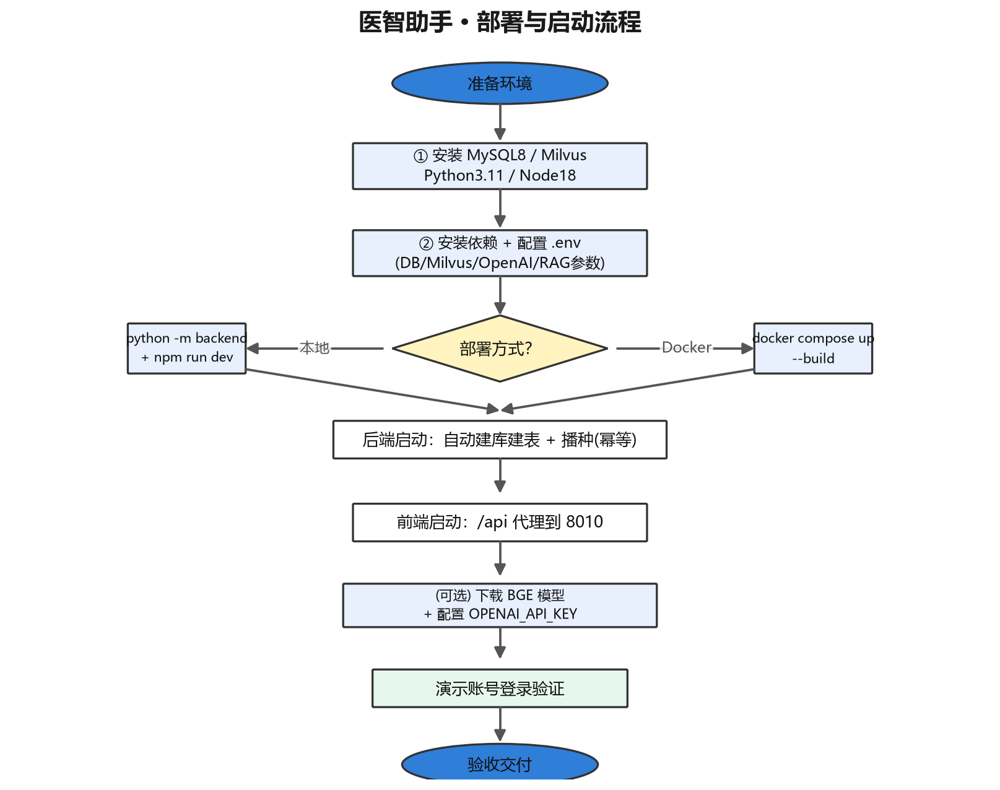
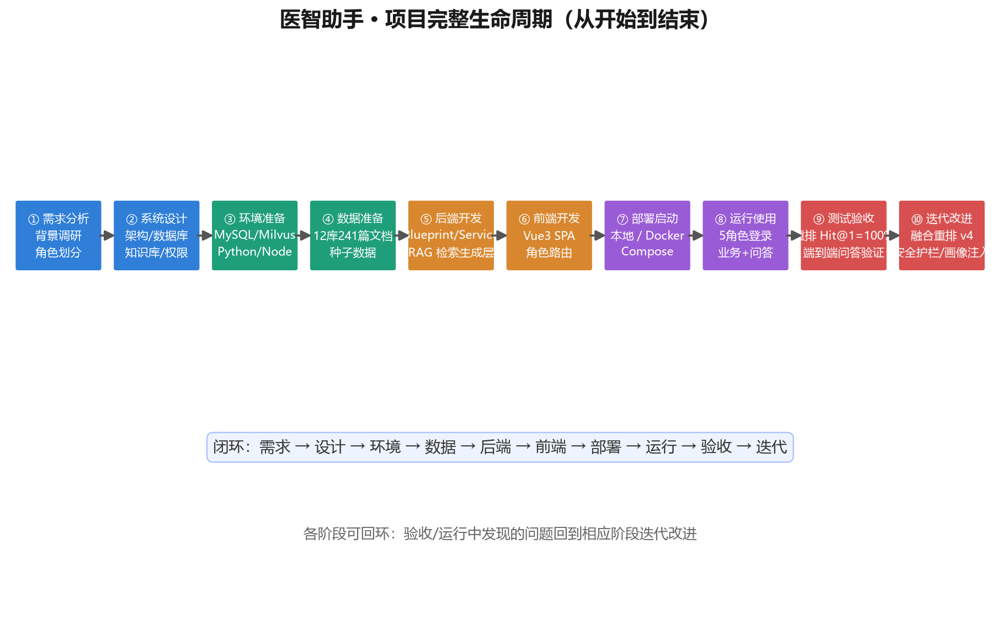
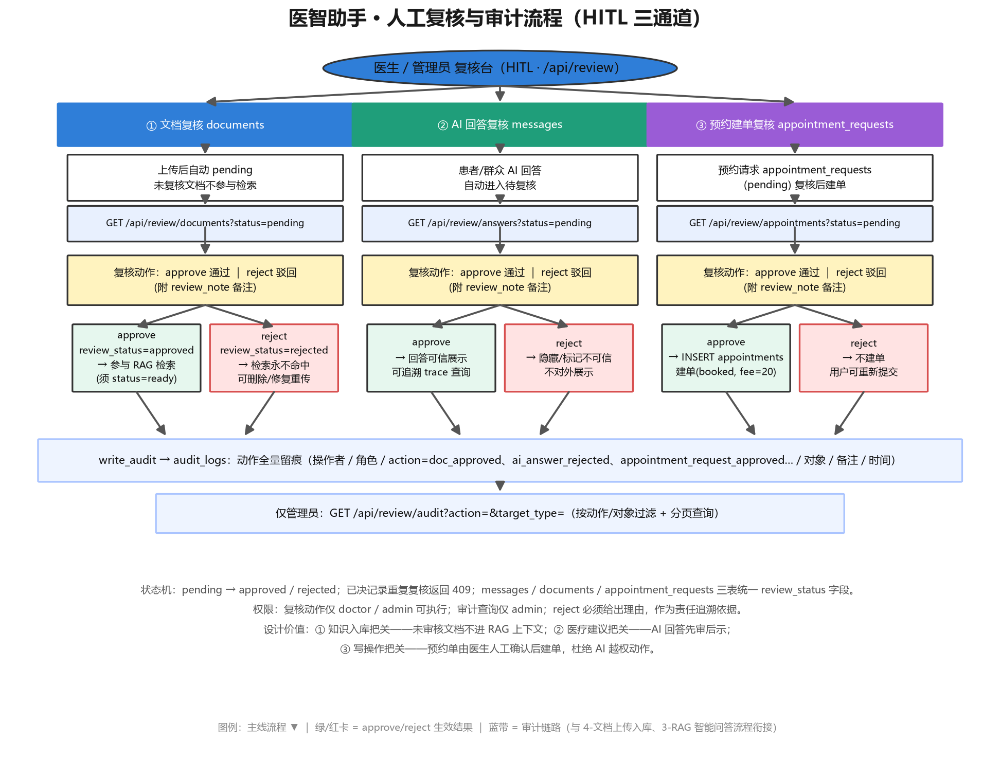

基于 RAG（检索增强生成）的医疗知识库智能问答系统，面向医院信息系统教学与演示场景。
Docker 一键启动 —— 无外部大模型 Key、无 Milvus 也能完整运行。
从混合检索到医疗安全兜底，每一层都为"真实可上线的医疗问答"而设计
BM25 稀疏检索 + BGE 稠密向量 + 融合重排 v4（实体地板 / 证据分 / 泛化词剔除），答案可溯源到具体文档片段，生产等价评测 Hit@1 = 100%。
急危重症关键词命中即直接返回急救指引（跳过检索与 LLM）；最终回答强制附带免责声明，医疗场景安全兜底。
回答前自动检索当前用户近期病史 / 预约并注入系统提示，实现个性化回答（如过敏史提醒）。
AI 回答、知识库文档与预约写操作均需 pending → approved 才生效，未复核内容不进入 RAG 上下文。
复核动作与关键写操作落 audit_logs，管理员可分页追溯（操作人 / 角色 / 来源 IP）。
无 LLM Key、无 Milvus、无 BGE 模型、无 GPU 均自动降级到离线规则链路——"任何时候都能跑起来"。
MySQL 8（生产默认）与 SQLite（零依赖演示）通过 DB_TYPE 一键切换。
呼吸系统 · 心血管 · 消化系统 · 神经系统 · 内分泌代谢 · 泌尿肾脏 · 风湿免疫 · 感染性疾病 · 急诊急症 · 外科骨科 · 皮肤科 · 妇儿疾病，公开 / 私有两类文档按角色隔离。
前端 Vue 3 单页应用 · Flask API 网关层 · RAG 12 步问答流水线 · 双存储 · 全链路 HITL 复核（点击大图查看）

由 chat_service 驱动的主干流水线，红色节点为医疗安全护栏
POST /api/chat/stream，SSE 流式通道建立
急危重症关键词命中 → 直接返回急救指引，跳过检索与 LLM
检索用户近期病史 / 预约 / 上次咨询摘要
按角色（患者/群众/护士/医生/管理员）算出可见知识库范围
BM25 Top-30（jieba 分词）∪ BGE 稠密向量 Top-30
实体地板 0.90 + 证据分，泛化词剔除，<0.45 丢弃，取 Top-8
仅保留 review_status='approved' 且 status='ready' 的文档
build_context() 拼装带来源标注的片段 + 注入用户画像
SSE 逐段推送；无 Key 时自动降级离线兜底生成
ensure_disclaimer() 兜底——缺免责内容自动补发增量帧
messages + citations 落库，引用可溯源到文档片段
患者/群众回答进入复核队列，动作全量落 audit_logs

前端路由按 meta.roles 做页面级守卫，后端每个接口再做一次角色校验
| 角色 | 知识库可见范围 | 业务功能 |
|---|---|---|
| patient 患者 | 仅公开库 | 健康档案、住院查询、消费明细、预约挂号 |
| public 群众 | 仅公开库 | 健康资讯、预约挂号（不关联个人健康数据） |
| nurse 护士 | 仅公开库 | 护理工作台：患者信息、护理记录录入、排班查看 |
| doctor 医生 | 公开库 + 自己名下及平台公共的私有库 | 患者管理、住院信息维护、知识库与文档管理、复核 AI 回答与预约请求 |
| admin 管理员 | 全部公开库与私有库 | 用户管理、全系统数据看板、复核、审计日志查询 |
9 张端到端流程图，覆盖登录鉴权、问答、知识入库、检索重排、复核审计与部署全生命周期（点击放大）








7 服务编排：MySQL · etcd · MinIO · Milvus · Attu · Flask 后端 · Nginx 前端
# 1. 准备环境变量（按需修改 OPENAI_API_KEY 等） cp .env.example .env # 2. 构建并后台启动（首次构建约数分钟至十余分钟） docker compose up -d --build # 3. 查看状态与日志 docker compose ps docker compose logs -f backend
| 入口 | 地址 |
|---|---|
| 前端应用 | http://localhost:3000 |
| 后端健康检查 | http://localhost:8010/api/health |
| Milvus 管理台（Attu） | http://localhost:8000 |
没有 MySQL / Milvus？设 DB_TYPE=sqlite、MILVUS_ENABLE=0，内置 NumpyStore + 哈希向量 + 离线规则回答，零外部依赖即可跑通全链路：
# 后端（Python 3.11+） pip install -r backend/requirements.txt python -m backend # → http://127.0.0.1:8010 # 前端（Node.js 18+） cd frontend && npm install && npm run dev # → :5173
自包含脚本（真实 embedder + BM25 + rerank，无需 MySQL / Milvus / LLM），内置 20 条人工标注医学查询：
python scripts/eval_rerank_local.py --public-only| 模式 | Hit@1 | MRR | GT 平均分 |
|---|---|---|---|
| 全库（483 篇，严格） | 95% | 0.975 | 0.987 |
| 仅公开（生产等价） | 100% | 1.000 | 0.988 |
密码统一为 demo123，播种即得，覆盖全部业务功能
| 账号 | 角色 | 可体验的功能 |
|---|---|---|
patientdemo | 患者 | 公开库问答、健康档案、住院与消费查询、预约挂号 |
doctordemo | 医生 | 知识库与文档管理、患者管理、住院维护、AI 回答 / 预约复核 |
nursedemo | 护士 | 护理工作台、护理记录、排班查看 |
publicdemo | 群众 | 健康资讯、公开库问答、预约挂号 |
admindemo | 管理员 | 全部功能 + 用户管理 + 全系统看板 + 审计日志 |